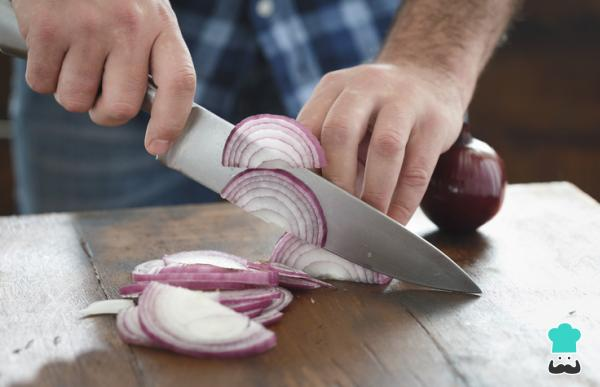

Volver al menu
Receta pizza atun
Ingredientes
- Una cebolla morada
- Una massa de pizza
- Una pizca de salsa de tomate
- Orégano al gusto
- 200g Queso mozzarela (preferiblemente)
- 2 Latas de atún
Paso a paso
- Precalentar el horno a 220ºC.

- Cortar la cebolla morada en juliana.

- Desenrollar la masa de pizza sobre el papel que la envuelve y colocar encima de la rejilla del horno.
- Repartir en la base el tomate frito sin llegar a los bordes, espolvorear el orégano, encima repartir el queso, el atún y la cebolla morada.
- Hornear durante unos 12 minutos, hasta que el borde esté ligeramente dorado.

Resultado final